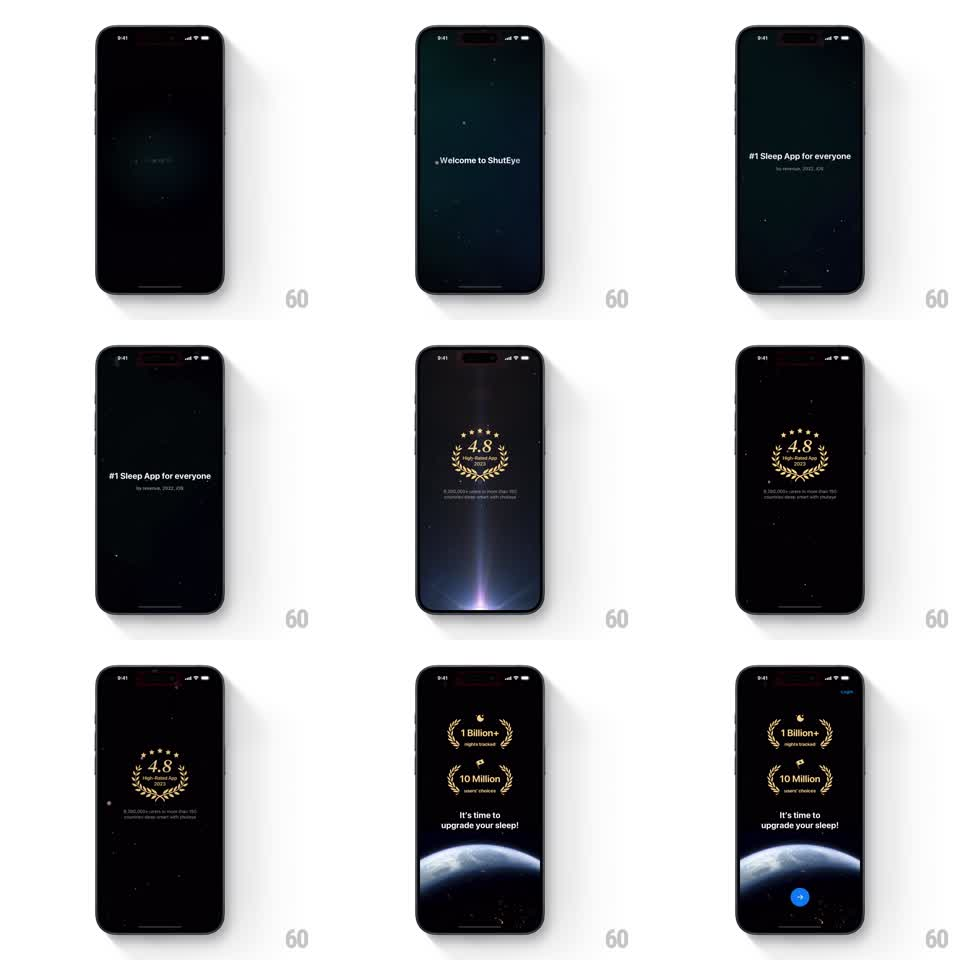

Media
Frame-by-frame

Rebuild this animation 1:1: ShutEye's splash sequence - a starfield fades up, "Welcome to ShutEye" and "#1 Sleep App for everyone" crossfade through, a laurel 4.8-rating badge glows in, and a sunlit Earth rises from the bottom under the stats and CTA.

Rebuild this animation 1:1: ShutEye's splash sequence - a starfield fades up, "Welcome to ShutEye" and "#1 Sleep App for everyone" crossfade through, a laurel 4.8-rating badge glows in, and a sunlit Earth rises from the bottom under the stats and CTA.
## Integration
Integration: stack-agnostic spec - springs given as stiffness/damping, timed motions as duration + curve; map every value to your framework and animation library of choice.
## Scene
A near-black starfield. Text beats play in sequence: "Welcome to ShutEye", then "#1 Sleep App for everyone" with an "App Store, 2023" style sub-line, then a laurel-wreath badge "4.8 High-Rated App 2024" with a glowing horizon rising below it, then stat laurels ("1 Billion+ nights tracked", "10 Million users' choices"), the line "It's time to upgrade your sleep!", and a glowing Earth cresting the bottom edge with a blue button.
## Motion spec
Pattern: timed splash sequence, ~6s.
- Stars twinkle in over 1s (scattered opacity pulses), then hold as the constant backdrop.
- "Welcome to ShutEye" fades up and out (600ms in, 800ms hold, 400ms out); "#1 Sleep App for everyone" crossfades into its place with the same timing.
- The laurel badge scales in (0.85 to 1, 400ms, ease-out) with a warm glow bloom behind it while a bright horizon line rises from the bottom (800ms, ease-in-out).
- The stat laurels replace the badge with a crossfade (400ms), the tagline fading up beneath them.
- Earth rises into frame (1s, ease-out), its day-night glow settling, and the blue button pops in (scale 0.8 to 1, spring stiffness 380 damping 18).
## Calibration
- One element on stage at a time until the final composition - this is a sequence, not a pile-up.
- The horizon glow precedes the Earth; the planet should feel expected when it arrives.
## Reduced motion
Skip to the final composition, fading in once.
## Don't miss
- The starfield never moves - only fades and twinkles.
- The Earth's glow spills slightly over the button zone, unifying the final frame.